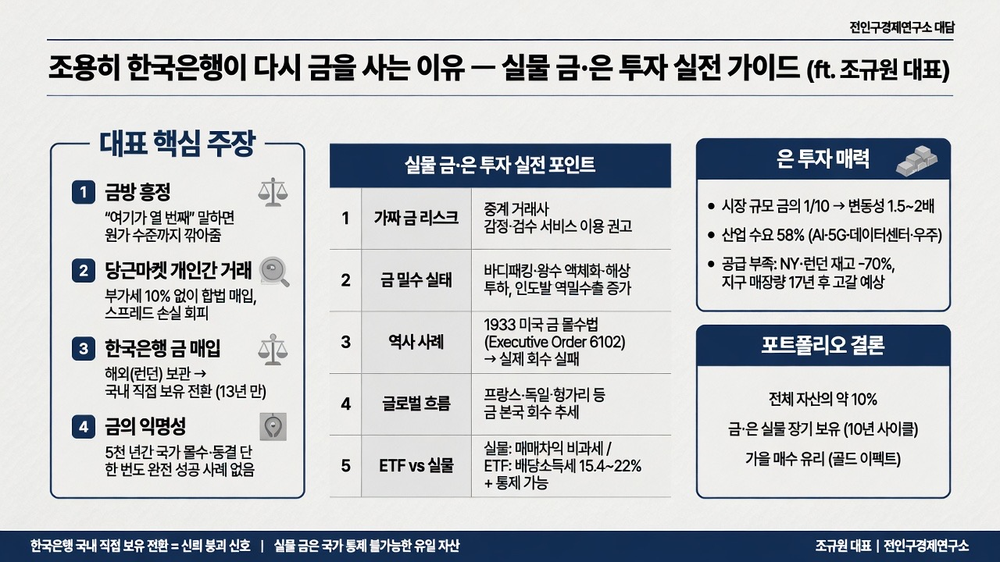

전인구경제연구소MORNING DIGEST · 2026-08-25 · 전인구경제연구소🎬 영상
조용히 한국은행이 다시 금을 사는 이유 — 실물 금·은 투자 실전 가이드 (ft. 조규원 대표)

01핵심 개요 (표)
항목
내용
영상 성격
전인구경제연구소 채널의 대담(인터뷰) 2부, 게스트는 금거래 중계업체 대표 조규원
핵심 화두
실물 금·은을 싸게 사는 법, 금 밀수의 실체, 한국은행의 13년 만 금 매입과 국내 반입의 의미, 은 투자 매력
대표 주장 1
금방(금은방)에서 여러 곳을 돌며 "여기가 열 번째"라고 흥정하면 원가 수준까지 깎아주는 경우가 많다 (01:11)
대표 주장 2
당근마켓 등 개인간 거래는 부가세(10%) 없이 합법적으로 실물 금을 살 수 있는 방법이다 (03:28)
대표 주장 3
한국은행이 금을 사는 것 자체보다 '해외(런던) 보관 대신 국내 직접 보유'로 전환한 결정이 훨씬 더 큰 신호다 (17:19)
대표 주장 4
금은 5천 년 동안 국가 통제(몰수·동결·제재)에 단 한 번도 완전히 성공한 적 없는 유일한 자산이며, 이 익명성이 안전자산 지위의 핵심 근거다 (12:05)
투자 결론
실물 금·은을 전체 자산의 약 10% 비중으로, 장기(약 10년 사이클) 보유할 것을 권고
02핵심 기능/내용 구조
금방 흥정 노하우: 2~3곳을 둘러보고 시세를 파악한 뒤 마지막 매장에서 "여기가 열 번째인데 사게 해주시면 사겠다"고 하면, 상인이 어차피 다른 곳에서 살 것을 우려해 원가 수준으로 내주는 경우가 많다는 실전 팁 (01:11).
개인간 거래(당근마켓 등)의 절세 효과: 정식 매입은 부가세 10%를 내야 하고 매수·매도 가격 차이(스프레드)까지 있어 사자마자 약 15% 손실을 보는 구조인데, 개인간 거래는 부가세가 없고 매수·매도가 차이도 없어 실물 투자를 가장 현명하게 하는 방법 중 하나로 소개된다 (03:28).
가짜 금(텅스텐 등) 리스크와 중계 거래 서비스: 개인간 직거래는 가품 위험이 있어, 화자가 창업한 회사는 감정·검수를 거친 매물만 중계해 신뢰성을 보장하는 서비스를 제공한다고 설명 (04:46).
금 밀수의 실태와 수법: 한국은 부가가치세와 금광 부재로 인해 밀수 유인이 크며, 바디패킹·왕수(王水)로 금을 액체·진흙 형태로 녹여 엑스레이를 피하는 수법, 해상 투하(보물선) 방식까지 소개된다 (06:00).
인도발 밀수출 확대 배경: 인도 모디 총리가 원유 수입 급증에 따른 외환 유출을 우려해 국민에게 금 매수 자제를 요청하고 금 관세를 8%에서 15%로 인상했지만, 오히려 한국 등지에서 인도로의 밀수출이 늘고 있다는 역설 (08:17).
금의 '익명성·통제 불가능성'이라는 본질 가치: 비트코인은 지갑 이동 추적과 동결이 가능하고 달러·미국채는 스위프트망 제재 대상이 될 수 있지만, 금은 5천 년간 통제에 성공한 사례가 없다는 점이 핵심 매력이라는 주장 (12:05).
1933년 미국 금 몰수법(Executive Order 6102) 사례: 대공황 후 화폐 과잉 발행에 따른 금태환 압박을 막기 위해 루즈벨트 대통령이 금 보유를 불법화(벌금 약 1억 원 상당 + 징역 10년급 처벌)했으나, 실물 자산의 형태 변경(주얼리화)과 추적 불가능성 때문에 실제 회수 실적은 저조했다는 역사적 근거 (10:52).
한국의 지정학적 특수성과 페트로달러 시스템: 수출 의존 국가인 한국이 벌어들인 달러로 미국 국채 대신 금을 사는 것은 외교적으로 민감한 선택이며, 이는 '효율의 시대'에서 '안보의 시대'로의 패러다임 전환을 보여주는 사례로 해석된다 (14:44).
각국의 금 본국 회수(repatriation) 흐름: 프랑스, 독일, 오스트리아, 헝가리, 체코, 폴란드 등이 미국(뉴욕)에 맡겨둔 금을 본국으로 회수하는 추세이며, 한국은행도 이번에 국내 직접 보유를 선언했다는 점이 신뢰 붕괴의 신호로 제시된다 (17:19).
역사적 선례 — 프랑스의 금 회수와 이후 금값 폭등: 1967년 프랑스의 금 본국 회수 이후 1970년부터 금값이 26배 폭등했고, 1931년 프랑스 회수 이후에도 1933년부터 금 대호황장이 이어졌다는 패턴이 제시된다 (같은 구간, 17:19 부근 발언).
금 ETF보다 실물을 선호하는 이유: ETF는 쉽게 사고팔 수 있어 강제 장기 투자 효과가 없고, 국가 통제 하의 자산이며, 국내 상장 ETF는 배당소득세 15.4%, 해외 상장은 22%가 부과되는 반면 실물은 매매차익 비과세라는 점을 근거로 든다 (19:55).
은 투자 매력 — 변동성과 산업 수요: 은은 금 대비 시장 규모가 약 1/10로 작아 금 상승기에 1.5~2배 변동성을 보이며, 수요의 약 58%가 산업용(AI·데이터센터·5G·우주산업 등 전기전도율 활용)으로 사상 최고치를 경신 중이라는 점을 강조 (21:09).
은 공급 부족 구조: 은은 금 채굴의 부산물로 생산되어 공급 탄력성이 낮고, 뉴욕상품거래소·런던금시장 재고가 약 -70%까지 감소했으며 지구 매장량 기준 약 17년이면 고갈된다는 추정이 제시된다 (22:25).
포트폴리오 배분 및 매수 타이밍 팁: 금·은 합산 전체 자산의 약 10% 보유가 이상적이며, 사이클이 약 10년으로 길어 서두를 필요가 없다는 조언과 함께, 가을(결혼 시즌·인도 축제 수요)에 금값이 오르는 '골드 이펙트' 현상이 소개된다 (24:43).
03기술적 맥락
부가가치세(VAT) 구조: 한국에서 금을 정식 매입하면 10% 부가세가 부과되고, 매수·매도 호가 차이(스프레드)까지 겹쳐 매입 즉시 약 15% 평가손실이 발생하는 구조다. 개인간 거래(당근마켓 등)는 이 부가세를 합법적으로 회피할 수 있는 유일한 통로로 소개된다.
왕수(aqua regia) 이용 밀수 수법: 질산과 염산 혼합물인 왕수는 금을 녹여 액체 또는 진흙 형태로 만들 수 있어, 이 상태에서는 엑스레이 검색으로 금속 여부를 판별하기 어렵다는 점이 밀수 확산의 기술적 배경으로 제시된다.
은의 전기전도율: 은은 모든 원소 중 전기전도율이 가장 높아 반도체·AI 서버·데이터센터·5G·우주산업 등 첨단 산업에서 구리를 대체하는 핵심 소재로 쓰이며, 이것이 산업 수요 급증의 근거로 제시된다.
금-은 동반 채굴 구조: 은은 대부분 금 채굴의 부산물로 생산되기 때문에, 금 생산량이 감소하면 은 공급도 함께 타이트해지는 연동 구조를 가진다.
04전략적 의미
한국은행의 정책 전환: 13년간 금 매입을 중단했던 한국은행이 금을 재매입하면서 동시에 '해외 보관 대신 국내 직접 보유'를 택한 것은, 보관 비용 증가와 대여 이자 수익 포기라는 비효율을 감수하면서까지 신뢰(안보) 우선 전략으로 이동했음을 시사한다.
페트로달러 체제와의 긴장: 수출로 벌어들인 달러를 미국 국채 대신 금 매입에 쓰는 것은 기존 달러 순환 구조(수출국이 달러를 벌어 미국채를 사주는 구조)에서 이탈하는 신호로, 외교적 리스크를 동반한 선택으로 해석된다.
효율에서 안보로의 패러다임 전환: 에너지(신재생·화력), 식량, 통화(달러 대신 금) 전반에 걸쳐 '싸고 효율적인 선택' 대신 '안전하고 통제받지 않는 선택'을 우선시하는 흐름이 전 세계적으로 확산되고 있다는 진단이다.
역사적 반복 가능성: 프랑스(1967년, 1931년)의 금 본국 회수 이후 각각 금값 26배 폭등과 대호황장이 뒤따른 선례가, 현재 다수 국가의 동시다발적 금 회수와 유사한 패턴으로 제시되며 향후 금값 상승 국면의 근거로 활용된다.